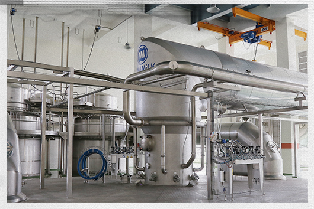

Nhìn nhà máy “đắp chiếu” sau chiến tranh, ít ai ngờ đây sẽ trở thành cái nôi cho thương hiệu sữa bột trẻ em đầu tiên của Việt Nam, người khai sinh là bà Mai Kiều Liên - khi đó mới ngoài 30 tuổi.
Những ký ức, cột mốc trong hành trình khai phá thị trường sữa bột trẻ em tuy khó khăn nhưng đầy máu lửa gắn liền với bà Mai Kiều Liên, người trực tiếp khai sinh ra Dielac - thương hiệu sữa bột đầu tiên của Việt Nam.
Năm 1988, Vinamilk tiếp quản và đầu tư để khôi phục lại một nhà máy của nước ngoài, vốn “đắp chiếu” nhiều năm sau chiến tranh. Thấy lon sữa bột đầu tiên được làm ra bởi chính bàn tay khối óc người Việt không được người tiêu dùng mặn mà và chịu sức ép cạnh tranh trước hàng ngoại, doanh nghiệp hiểu rằng ngoài thời gian thì chính chất lượng sẽ là yếu tố quyết định để thay đổi quan niệm chuộng hàng ngoại của người tiêu dùng bấy giờ.
Một mặt tháo gỡ thị trường trong nước mặt khác bà cũng tìm đường để xuất khẩu sữa bột Việt ra nước ngoài. Quyết tâm giành hợp đồng xuất khẩu bằng được, bà cùng đoàn 27 đại diện Việt Nam tiến vào biên giới Iraq giữa đợt oanh kích năm 1998. Dưới tầng hầm ký bản hợp đồng giữa 1-2h sáng, phía trên đầu là tên lửa nhả đạn, khói cuộn đầy trời. Cũng có sợ, có lo, nhưng "chiến trường" kinh doanh là nơi người nữ lãnh đạo quan tâm hơn cả, bất chấp hiểm nguy để tìm con đường dài hơi cho việc vận hành. Đến năm 2005, Vinamilk tiếp tục nối lại hợp đồng xuất khẩu vào thị trường Iraq, sau khi vượt qua 15 hãng sữa quốc tế. Nhờ vậy, kim ngạch xuất khẩu đạt dấu son với con số 137 triệu USD, tăng gấp ba lần so với 2004.
Một trong những khách hàng nhí đầu tiên sử dụng sữa Dielac khi vừa ra mắt thị trường.
Hồi sinh
nhà máy sữa bột
Năm 1976, bà Mai Kiều Liên tốt nghiệp ngành sữa tại Nga. Về nước, năm 1982 bà bắt đầu từ vị trí kỹ sư, quản đốc, kỹ thuật văn phòng rồi Phó giám đốc nhà máy sữa Thống Nhất. Đến năm 1984, bà được bổ nhiệm là Phó tổng giám đốc phụ trách kinh tế của Xí nghiệp liên hiệp Sữa - Cà phê - Bánh kẹo I (tiền thân của Vinamilk) khi mới 31 tuổi.
Bà Mai Kiều Liên nhớ lại, ngày ấy cuộc sống vô cùng khó khăn. Nền kinh tế kế hoạch hóa, hầu hết sinh hoạt đều do Nhà nước chi trả. Các gia đình xếp hàng, đổi tem phiếu lấy nhu yếu phẩm hàng ngày. Có người dùng gạch "giữ chỗ" nhưng đến lượt thì không còn hàng, đành về tay không.
Sữa, thời ấy là xa xỉ phẩm. Những hộp sữa đặc vẹo vọ nhưng lại là niềm mơ ước của mọi đứa trẻ. Ngày thường mẹ sẽ giấu đi, đến khi nhà có người ốm mới mang ra, pha thêm nước nóng để uống. Đám trẻ bâu quanh cửa sổ, hít hà mùi sữa cho đỡ thèm. "Tặng sữa còn quý hơn tặng tiền", là câu nói cửa miệng của nhiều người ở thế kỷ trước. Bức tranh ấy trở thành niềm thôi thúc với bà Mai Kiều Liên: làm sao để xây dựng nền công nghiệp sữa cho Việt Nam, bình dân hóa ngành sữa bột trẻ em với những sản phẩm đủ dinh dưỡng, vừa túi tiền.
Vinamilk được giao phụ trách hai nhà máy Trường Thọ và Thống Nhất. Còn một nhà máy khác (về sau được mang tên Dielac) vốn của một tập đoàn nước ngoài xây dựng nhưng chưa kịp hoàn thiện, hệ thống điều khiển vẫn dở dang. Vậy nên sau khi Nhà nước tiếp quản năm 1975, nhà máy này "đắp chiếu" suốt hơn chục năm liền.
Năm 1986, khi vốn tự có của Vinamilk đạt mức 20 tỷ đồng, bà Mai Kiều Liên mới nghĩ tới chuyện phục hồi nhà máy trên, thực hiện giấc mơ sản xuất sữa bột cho trẻ em Việt.

Một trong những khách hàng nhí đầu tiên sử dụng sữa Dielac khi vừa ra mắt thị trường.
